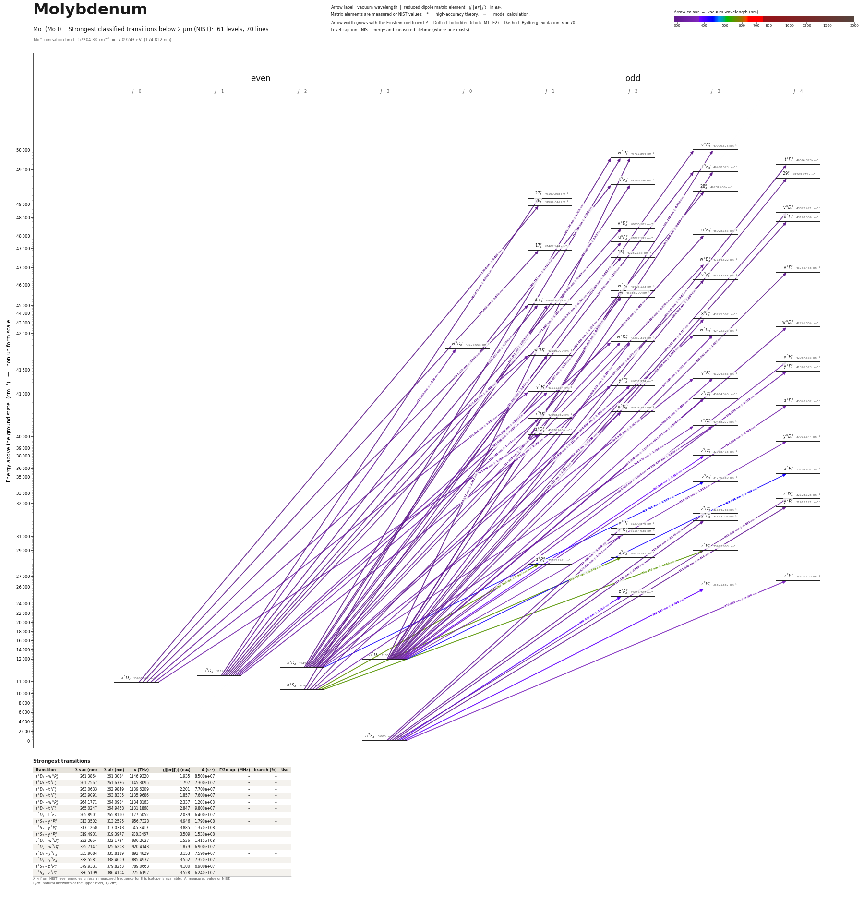

Molybdenum energy level diagram
Energy levels and transitions of neutral molybdenum (Mo I): the 90 strongest classified lines below 2 µm from the NIST Atomic Spectra Database and the 82 levels they connect, each line with its vacuum wavelength, frequency and, for 89 of them, the reduced dipole matrix element derived from the NIST transition rate. Measured lifetimes, transition rates, hyperfine constants and isotope shifts from the literature are included, each with its citation.
Hover a line or a level to isolate it, click to keep it selected. Scroll to zoom, drag to move.

Download: diagram (PDF) diagram (SVG) transitions (CSV) levels (CSV) source code

Key transitions of molybdenum
| Transition | λ vac (nm) | λ air (nm) | ν (THz) | |⟨J‖er‖J′⟩| (ea₀) | A (s⁻¹) | Γ/2π up. (MHz) | branch (%) | Use |
|---|---|---|---|---|---|---|---|---|
| a 7S3 – z 7P°4 | 379.9333 | 379.8255 | 789.0659(6) | 4.100 | 6.900e+07 | 10.83 | 100 | laser-cooling / MOT cycling transition |
| a 7S3 – z 7P°3 | 386.5199 | 386.4104 | 775.6197 | 3.528 | 6.240e+07 | 10.07 | 98.6 | member of the a7S3 - z7P resonance triplet |
| a 7S3 – z 7P°2 | 390.4059 | 390.2953 | 767.8994 | 3.010 | 6.170e+07 | 9.764 | 100 | member of the a7S3 - z7P resonance triplet |
| z 7P°4 – g 7D5 | 415.9072 | 415.7900 | 720.8157 | – | – | – | – | second step of a two-colour, three-photon resonance-ioniz… |
| a 5D3 – z 7P°4 | 691.4710 | 691.2803 | 433.5575 | 0.021 | 2.900e+02 | 10.83 | 0 | second leak channel of the 380 nm cooling transition |
| a 5D4 – z 7P°4 | 715.6084 | 715.4112 | 418.93367(28) | 0.043 | 1.150e+03 | 10.83 | 0 | MOT repump line |
λ, ν from NIST level energies unless a measured frequency for this isotope is available. A: measured value or NIST. Γ/2π: natural linewidth of the upper level, 1/(2πτ).
95Mo hyperfine structure (I = 5/2)
| Level | A (MHz) | B (MHz) | Shift of each F level from the centre of gravity (MHz) |
|---|---|---|---|
| a 7S3 | -208.582060(10) | 0.03705(10) | F=1/2: +2085.84 F=3/2: +1772.96 F=5/2: +1251.49 F=7/2: +521.44 F=9/2: -417.18 F=11/2: -1564.36 |
Measured A, B constants; sources in the data file.
Isotope shifts
| Transition | λ vac (nm) | Isotopes | Shift (MHz) |
|---|---|---|---|
| a 7S3 – z 7P°4 | 379.933 | 92-96 | 920.4(19) |
| a 7S3 – z 7P°4 | 379.933 | 94-96 | 418.4(16) |
| a 7S3 – z 7P°4 | 379.933 | 98-96 | -289.4(16) |
| a 7S3 – z 7P°4 | 379.933 | 100-96 | -812.0(19) |
Shift = ν(first isotope) − ν(second isotope).
Listed Mo transitions below 2 µm
| Lower level | Upper level | λ vacuum (nm) | λ air (nm) | ν (THz) | Type | |⟨J‖er‖J′⟩| (ea₀) | A (s⁻¹) | Branching (%) | Source of matrix element / A |
|---|---|---|---|---|---|---|---|---|---|
| a 5S2 | v 5P°3 | 254.8989 | 254.8224 | 1176.1231 | E1 | 0.957 NIST | 1.600e+07 NIST | – | NIST ASD (accuracy B) |
| a 5S2 | w 5P°2 | 256.7819 | 256.7049 | 1167.4986 | E1 | 1.570 NIST | 5.900e+07 NIST | – | NIST ASD (accuracy B) |
| a 5D2 | w 5P°2 | 261.3864 | 261.3084 | 1146.9320 | E1 | 1.935 NIST | 8.500e+07 NIST | – | NIST ASD (accuracy B) |
| a 5D1 | t 5F°2 | 261.7567 | 261.6786 | 1145.3095 | E1 | 1.797 NIST | 7.300e+07 NIST | – | NIST ASD (accuracy B) |
| a 5D3 | v 5P°3 | 262.1845 | 262.1063 | 1143.4407 | E1 | 0.850 NIST | 1.160e+07 NIST | – | NIST ASD (accuracy B) |
| a 5D1 | 27°1 | 262.9746 | 262.8962 | 1140.0053 | E1 | 0.868 NIST | 2.800e+07 NIST | – | NIST ASD (accuracy B) |
| a 5D2 | t 5F°3 | 263.0633 | 262.9849 | 1139.6209 | E1 | 2.201 NIST | 7.700e+07 NIST | – | NIST ASD (accuracy B) |
| a 5D0 | 26°1 | 263.2287 | 263.1502 | 1138.9051 | E1 | 0.828 NIST | 2.540e+07 NIST | – | NIST ASD (accuracy B) |
| a 5D2 | t 5F°2 | 263.9091 | 263.8305 | 1135.9686 | E1 | 1.857 NIST | 7.600e+07 NIST | – | NIST ASD (accuracy B) |
| a 5D3 | w 5P°2 | 264.1771 | 264.0984 | 1134.8163 | E1 | 2.337 NIST | 1.200e+08 NIST | – | NIST ASD (accuracy B) |
| a 5D2 | 28°3 | 264.5150 | 264.4362 | 1133.3667 | E1 | 1.119 NIST | 1.960e+07 NIST | – | NIST ASD (accuracy B) |
| a 5D3 | t 5F°4 | 265.0247 | 264.9458 | 1131.1868 | E1 | 2.847 NIST | 9.800e+07 NIST | – | NIST ASD (accuracy B) |
| a 5D3 | t 5F°3 | 265.8901 | 265.8110 | 1127.5052 | E1 | 2.039 NIST | 6.400e+07 NIST | – | NIST ASD (accuracy B) |
| a 5D3 | 29°4 | 266.5886 | 266.5094 | 1124.5508 | E1 | 1.054 NIST | 1.320e+07 NIST | – | NIST ASD (accuracy B) |
| a 5D3 | v 5D°4 | 270.1828 | 270.1027 | 1109.5910 | E1 | 0.777 NIST | 6.900e+06 NIST | – | NIST ASD (accuracy B) |
| a 5D1 | v 3D°2 | 270.6917 | 270.6114 | 1107.5052 | E1 (intercombination) | 0.997 NIST | 2.030e+07 NIST | – | NIST ASD (accuracy B) |
| a 5D1 | u 5F°2 | 272.5954 | 272.5147 | 1099.7709 | E1 | 1.183 NIST | 2.800e+07 NIST | – | NIST ASD (accuracy B) |
| a 5D2 | u 5F°3 | 273.4196 | 273.3387 | 1096.4556 | E1 | 1.443 NIST | 2.950e+07 NIST | – | NIST ASD (accuracy B) |
| a 5D0 | 17°1 | 274.4524 | 274.3712 | 1092.3297 | E1 | 0.870 NIST | 2.470e+07 NIST | – | NIST ASD (accuracy B) |
| a 5D3 | u 5F°4 | 275.2280 | 275.1467 | 1089.2513 | E1 | 1.534 NIST | 2.540e+07 NIST | – | NIST ASD (accuracy B) |
| a 5D1 | 15°2 | 276.7067 | 276.6250 | 1083.4304 | E1 | 0.782 NIST | 1.170e+07 NIST | – | NIST ASD (accuracy B) |
| a 5D2 | w 3D°3 | 279.8756 | 279.7931 | 1071.1633 | E1 (intercombination) | 0.952 measured | 1.197e+07 measured | 12.6 | Jiang, Wang, Shang, Tian, Yin, Jiang, Pei, Dai, J. Opt. Soc. Am. B 30, 489 (2013), Table 3 |
| a 5S2 | v 5F°3 | 280.2293 | 280.1468 | 1069.8111 | E1 | 0.971 NIST | 1.240e+07 NIST | – | NIST ASD (accuracy B) |
| a 5S2 | v 5F°2 | 280.2371 | 280.1545 | 1069.7816 | E1 | 1.284 measured | 3.034e+07 measured | 23.4 | Jiang, Wang, Shang, Tian, Yin, Jiang, Pei, Dai, J. Opt. Soc. Am. B 30, 489 (2013), Table 3 |
| a 5D3 | v 5F°4 | 286.5497 | 286.4656 | 1046.2145 | E1 | 1.040 measured | 1.034e+07 measured | 8.6 | Jiang, Wang, Shang, Tian, Yin, Jiang, Pei, Dai, J. Opt. Soc. Am. B 30, 489 (2013), Table 3 |
| a 5D4 | w 3F°3 | 289.1843 | 289.0995 | 1036.6830 | E1 (intercombination) | 1.631 measured | 3.183e+07 measured | 59.8 | Jiang, Wang, Shang, Tian, Yin, Jiang, Pei, Dai, J. Opt. Soc. Am. B 30, 489 (2013), Table 3 |
| a 5D0 | 3.7°1 | 293.1251 | 293.0394 | 1022.7457 | E1 | 0.844 NIST | 1.910e+07 NIST | – | NIST ASD (accuracy B) |
| a 5D1 | 3.7°1 | 294.6525 | 294.5664 | 1017.4443 | E1 | 1.246 NIST | 4.100e+07 NIST | – | NIST ASD (accuracy B) |
| a 5D2 | 4°2 | 294.6868 | 294.6006 | 1017.3259 | E1 | 1.030 NIST | 1.680e+07 NIST | – | NIST ASD (accuracy B) |
| a 5D2 | 3.7°1 | 297.3827 | 297.2959 | 1008.1034 | E1 | 1.023 NIST | 2.690e+07 NIST | – | NIST ASD (accuracy B) |
| a 5D3 | w 5F°2 | 297.9150 | 297.8280 | 1006.3021 | E1 | 0.989 NIST | 1.500e+07 NIST | – | NIST ASD (accuracy B) |
| a 7S3 | z 7D°4 | 311.3022 | 311.2119 | 963.0272 | E1 | 0.923 NIST | 6.360e+06 NIST | 75.7 | NIST ASD (accuracy A) |
| a 7S3 | y 7P°4 | 313.3502 | 313.2595 | 956.7328 | E1 | 4.946 NIST | 1.790e+08 NIST | 100 | NIST ASD (accuracy B+) |
| a 7S3 | z 7D°3 | 315.9080 | 315.8166 | 948.9866 | E1 | 2.244 measured | 4.623e+07 measured | 99.4 | Jiang, Wang, Shang, Tian, Yin, Jiang, Pei, Dai, J. Opt. Soc. Am. B 30, 489 (2013), Table 3 |
| a 7S3 | y 7P°3 | 317.1260 | 317.0343 | 945.3417 | E1 | 3.885 NIST | 1.370e+08 NIST | 100 | NIST ASD (accuracy B+) |
| a 5D3 | x 5F°3 | 318.6025 | 318.5104 | 940.9607 | E1 | 1.685 NIST | 2.540e+07 NIST | – | NIST ASD (accuracy B) |
| a 7S3 | y 7P°2 | 319.4901 | 319.3977 | 938.3467 | E1 | 3.509 NIST | 1.530e+08 NIST | 100 | NIST ASD (accuracy B+) |
| a 5D0 | w 5D°1 | 320.6142 | 320.5216 | 935.0566 | E1 | 1.449 NIST | 4.300e+07 NIST | – | NIST ASD (accuracy B) |
| a 7S3 | z 7D°2 | 320.9764 | 320.8837 | 934.0014 | E1 | 1.503 NIST | 2.770e+07 NIST | 98.6 | NIST ASD (accuracy A) |
| a 5D1 | w 5D°2 | 321.6000 | 321.5071 | 932.1906 | E1 | 1.857 NIST | 4.200e+07 NIST | – | NIST ASD (accuracy B) |
| a 5D1 | w 5D°0 | 322.2664 | 322.1734 | 930.2627 | E1 | 1.526 NIST | 1.410e+08 NIST | – | NIST ASD (accuracy B) |
| a 5D2 | w 5D°3 | 322.9144 | 322.8212 | 928.3961 | E1 | 2.130 NIST | 3.900e+07 NIST | – | NIST ASD (accuracy B) |
| a 5D3 | w 5D°4 | 323.7995 | 323.7061 | 925.8582 | E1 | 2.109 NIST | 2.950e+07 NIST | – | NIST ASD (accuracy B) |
| a 5D2 | w 5D°2 | 324.8551 | 324.7614 | 922.8497 | E1 | 1.203 NIST | 1.710e+07 NIST | – | NIST ASD (accuracy B) |
| a 5D2 | w 5D°1 | 325.7147 | 325.6208 | 920.4143 | E1 | 1.879 NIST | 6.900e+07 NIST | – | NIST ASD (accuracy B) |
| a 5D3 | w 5D°3 | 327.1842 | 327.0899 | 916.2804 | E1 | 2.087 NIST | 3.600e+07 NIST | – | NIST ASD (accuracy B) |
| a 5G2 | 11°2 | 328.8330 | 328.7383 | 911.6862 | E1 | 1.301 measured | 1.928e+07 measured | 25.8 | Jiang, Wang, Shang, Tian, Yin, Jiang, Pei, Dai, J. Opt. Soc. Am. B 30, 489 (2013), Table 3 |
| a 5D3 | w 5D°2 | 329.1768 | 329.0820 | 910.7340 | E1 | 2.180 NIST | 5.400e+07 NIST | – | NIST ASD (accuracy B) |
| a 5D3 | y 3F°4 | 330.8078 | 330.7126 | 906.2437 | E1 (intercombination) | 1.418 NIST | 1.250e+07 NIST | – | NIST ASD (accuracy B+) |
| a 5G4 | x 3D°3 | 332.6608 | 332.5652 | 901.1955 | E1 (intercombination) | 1.350 measured | 1.434e+07 measured | 23.4 | Jiang, Wang, Shang, Tian, Yin, Jiang, Pei, Dai, J. Opt. Soc. Am. B 30, 489 (2013), Table 3 |
| a 5S2 | x 5D°2 | 332.6630 | 332.5673 | 901.1896 | E1 | 1.250 NIST | 1.720e+07 NIST | – | NIST ASD (accuracy B+) |
| a 5D0 | y 5F°1 | 332.8261 | 332.7304 | 900.7479 | E1 | 1.254 NIST | 2.880e+07 NIST | – | NIST ASD (accuracy B+) |
| a 5D1 | y 5F°2 | 334.5691 | 334.4730 | 896.0554 | E1 | 2.363 NIST | 6.040e+07 NIST | – | NIST ASD (accuracy B+) |
| a 5D1 | y 5F°1 | 334.7966 | 334.7004 | 895.4465 | E1 | 1.229 NIST | 2.720e+07 NIST | – | NIST ASD (accuracy B+) |
| a 5D2 | y 5F°3 | 335.9084 | 335.8119 | 892.4829 | E1 | 3.153 NIST | 7.590e+07 NIST | – | NIST ASD (accuracy A) |
| a 5S2 | x 5D°3 | 336.4744 | 336.3777 | 890.9815 | E1 | 1.899 NIST | 2.740e+07 NIST | 43.6 | NIST ASD (accuracy B+) |
| a 5D2 | y 5F°2 | 338.0936 | 337.9965 | 886.7145 | E1 | 1.980 NIST | 4.110e+07 NIST | – | NIST ASD (accuracy B+) |
| a 5D1 | x 5D°1 | 338.3454 | 338.2483 | 886.0545 | E1 | 1.235 NIST | 2.660e+07 NIST | – | NIST ASD (accuracy B+) |
| a 5D3 | y 5F°4 | 338.5581 | 338.4609 | 885.4977 | E1 | 3.552 NIST | 7.320e+07 NIST | – | NIST ASD (accuracy A) |
| a 5D3 | y 5F°3 | 340.5312 | 340.4335 | 880.3672 | E1 | 1.693 NIST | 2.100e+07 NIST | – | NIST ASD (accuracy A) |
| a 5D3 | z 3D°3 | 343.5772 | 343.4787 | 872.5622 | E1 (intercombination) | 1.566 NIST | 1.750e+07 NIST | – | NIST ASD (accuracy B) |
| a 5D0 | z 3D°1 | 343.9855 | 343.8869 | 871.5264 | E1 (intercombination) | 1.188 NIST | 2.340e+07 NIST | – | NIST ASD (accuracy B) |
| a 5D2 | x 5D°3 | 344.4248 | 344.3261 | 870.4149 | E1 | 1.133 NIST | 9.100e+06 NIST | 14.5 | NIST ASD (accuracy B+) |
| a 5D3 | z 3F°4 | 345.0062 | 344.9074 | 868.9480 | E1 (intercombination) | 1.665 NIST | 1.520e+07 NIST | – | NIST ASD (accuracy B) |
| a 5P3 | v 5F°4 | 350.5413 | 350.4411 | 855.2271 | E1 | 2.512 measured | 3.298e+07 measured | 27.4 | Jiang, Wang, Shang, Tian, Yin, Jiang, Pei, Dai, J. Opt. Soc. Am. B 30, 489 (2013), Table 3 |
| a 5P3 | 6°4 | 352.5983 | 352.4976 | 850.2378 | E1 | 1.834 measured | 1.727e+07 measured | 42.1 | Jiang, Wang, Shang, Tian, Yin, Jiang, Pei, Dai, J. Opt. Soc. Am. B 30, 489 (2013), Table 3 |
| a 5P3 | v 5F°2 | 354.3178 | 354.2165 | 846.1118 | E1 | 1.448 measured | 1.910e+07 measured | 14.7 | Jiang, Wang, Shang, Tian, Yin, Jiang, Pei, Dai, J. Opt. Soc. Am. B 30, 489 (2013), Table 3 |
| a 5P2 | v 5F°2 | 355.9236 | 355.8220 | 842.2943 | E1 | 1.462 measured | 1.920e+07 measured | 14.8 | Jiang, Wang, Shang, Tian, Yin, Jiang, Pei, Dai, J. Opt. Soc. Am. B 30, 489 (2013), Table 3 |
| a 5D3 | y 5D°4 | 356.4154 | 356.3137 | 841.1321 | E1 | 1.212 NIST | 7.300e+06 NIST | – | NIST ASD (accuracy B+) |
| a 5P1 | v 5F°2 | 357.4898 | 357.3878 | 838.6041 | E1 | 1.492 measured | 1.974e+07 measured | 15.2 | Jiang, Wang, Shang, Tian, Yin, Jiang, Pei, Dai, J. Opt. Soc. Am. B 30, 489 (2013), Table 3 |
| a 7S3 | z 7P°4 | 379.9333 | 379.8255 | 789.0659 | E1 | 4.100 measured | 6.900e+07 measured | 100 | Whaling, Hannaford, Lowe, Biemont, Grevesse, JQSRT 32, 69 (1984), as quoted in Paladugu, … |
| a 5D3 | z 5D°3 | 382.9962 | 382.8876 | 782.7557 | E1 | 1.619 NIST | 1.350e+07 NIST | – | NIST ASD (accuracy A) |
| a 7S3 | z 7P°3 | 386.5199 | 386.4104 | 775.6197 | E1 | 3.528 NIST | 6.240e+07 NIST | 98.6 | NIST ASD (accuracy A) |
| a 7S3 | z 7P°2 | 390.4059 | 390.2953 | 767.8994 | E1 | 3.010 NIST | 6.170e+07 NIST | 100 | NIST ASD (accuracy A) |
| z 7P°4 | g 7D5 | 415.9072 | 415.7900 | 720.8157 | E1 | – | – | – | – |
| a 3G4 | 3.6°4 | 420.2094 | 420.0910 | 713.4359 | E1 | 2.672 measured | 2.167e+07 measured | 57 | Jiang, Wang, Shang, Tian, Yin, Jiang, Pei, Dai, J. Opt. Soc. Am. B 30, 489 (2013), Table 3 |
| a 3F2 | w 3D°3 | 422.8309 | 422.7119 | 709.0126 | E1 | 3.488 measured | 4.657e+07 measured | 48.9 | Jiang, Wang, Shang, Tian, Yin, Jiang, Pei, Dai, J. Opt. Soc. Am. B 30, 489 (2013), Table 3 |
| a 5D3 | z 5F°4 | 428.9837 | 428.8630 | 698.8435 | E1 | 1.919 NIST | 1.050e+07 NIST | – | NIST ASD (accuracy B+) |
| a 3F4 | x 3D°3 | 429.3340 | 429.2132 | 698.2733 | E1 | 3.101 measured | 3.516e+07 measured | 57.3 | Jiang, Wang, Shang, Tian, Yin, Jiang, Pei, Dai, J. Opt. Soc. Am. B 30, 489 (2013), Table 3 |
| a 5D2 | z 5F°3 | 429.4423 | 429.3215 | 698.0973 | E1 | 1.507 NIST | 8.300e+06 NIST | – | NIST ASD (accuracy B+) |
| a 3H4 | v 5F°4 | 441.3031 | 441.1792 | 679.3346 | E1 (intercombination) | 3.747 measured | 3.678e+07 measured | 30.5 | Jiang, Wang, Shang, Tian, Yin, Jiang, Pei, Dai, J. Opt. Soc. Am. B 30, 489 (2013), Table 3 |
| a 3H5 | v 5F°4 | 448.6178 | 448.4920 | 668.2580 | E1 (intercombination) | 2.376 measured | 1.408e+07 measured | 11.7 | Jiang, Wang, Shang, Tian, Yin, Jiang, Pei, Dai, J. Opt. Soc. Am. B 30, 489 (2013), Table 3 |
| c 5D4 | 12°3 | 462.7715 | 462.6419 | 647.8196 | E1 | 4.253 measured | 5.283e+07 measured | 73.4 | Jiang, Wang, Shang, Tian, Yin, Jiang, Pei, Dai, J. Opt. Soc. Am. B 30, 489 (2013), Table 3 |
| a 3H5 | 3.6°4 | 488.1436 | 488.0074 | 614.1480 | E1 | 2.731 measured | 1.444e+07 measured | 38 | Jiang, Wang, Shang, Tian, Yin, Jiang, Pei, Dai, J. Opt. Soc. Am. B 30, 489 (2013), Table 3 |
| b 3D2 | 11°2 | 492.7808 | 492.6433 | 608.3688 | E1 | 2.202 measured | 1.642e+07 measured | 22 | Jiang, Wang, Shang, Tian, Yin, Jiang, Pei, Dai, J. Opt. Soc. Am. B 30, 489 (2013), Table 3 |
| a 5S2 | z 5P°3 | 550.8023 | 550.6493 | 544.2833 | E1 | 4.565 NIST | 3.610e+07 NIST | 80.5 | NIST ASD (accuracy A+) |
| a 5S2 | z 5P°2 | 553.4567 | 553.3030 | 541.6728 | E1 | 3.945 NIST | 3.720e+07 NIST | 82.2 | NIST ASD (accuracy A+) |
| a 5S2 | z 5P°1 | 557.1990 | 557.0443 | 538.0348 | E1 | 2.907 NIST | 3.300e+07 NIST | 71.6 | NIST ASD (accuracy A) |
| a 5D3 | z 7P°4 | 691.4710 | 691.2803 | 433.5575 | E1 (intercombination) | 0.0206 measured | 2.900e+02 measured | 0 | Paladugu, Pilgram, Eckel, Norrgard, "Chirped magneto-optical trap of molybdenum", arXiv:2… |
| a 5D4 | z 7P°4 | 715.6084 | 715.4112 | 418.9337 | E1 (intercombination) | 0.0433 measured | 1.150e+03 measured | 0 | Paladugu, Pilgram, Eckel, Norrgard, "Chirped magneto-optical trap of molybdenum", arXiv:2… |
Reduced dipole matrix elements follow the convention A = ω³|d|²/(3πε₀ħc³(2J′+1)), with J′ the upper level. Tags show where a number comes from: measured, NIST compilation, high-accuracy theory, or a model calculation.
Mo energy levels
| Level | Energy (cm⁻¹) | J | Parity | Lifetime | gJ | Hyperfine A (MHz) | Hyperfine B (MHz) | Lifetime source | Hyperfine source |
|---|---|---|---|---|---|---|---|---|---|
| a 7S3 | 0.000 | 3 | even | stable | 1.992 | -208.582 | 0.03705 | – | Buettgenbach, Herschel, Meisel, Schroedl, Witte, Childs, Z. Phys. 266, 271 (1974) (abstra… |
| a 5S2 | 10768.332 | 2 | even | – | 1.98 | – | – | – | – |
| a 5D0 | 10965.947 | 0 | even | – | – | – | – | – | – |
| a 5D1 | 11142.784 | 1 | even | – | 1.49 | – | – | – | – |
| a 5D2 | 11454.362 | 2 | even | – | 1.498 | – | – | – | – |
| a 5D3 | 11858.498 | 3 | even | – | 1.488 | – | – | – | – |
| a 5D4 | 12346.280 | 4 | even | – | 1.483 | – | – | – | – |
| a 5G2 | 16641.081 | 2 | even | – | 0.331 | – | – | – | – |
| a 5G4 | 16747.720 | 4 | even | – | 1.141 | – | – | – | – |
| a 5P3 | 18229.152 | 3 | even | – | 1.636 | – | – | – | – |
| a 5P2 | 18356.491 | 2 | even | – | 1.789 | – | – | – | – |
| a 5P1 | 18479.582 | 1 | even | – | 2.424 | – | – | – | – |
| a 3G4 | 21153.884 | 4 | even | – | 1.051 | – | – | – | – |
| a 3F4 | 23516.476 | 4 | even | – | 1.117 | – | – | – | – |
| a 3F2 | 23534.407 | 2 | even | – | 0.667 | – | – | – | – |
| a 3H4 | 24096.294 | 4 | even | – | 0.973 | – | – | – | – |
| a 3H5 | 24465.771 | 5 | even | – | 1.128 | – | – | – | – |
| c 5D4 | 25455.636 | 4 | even | – | 1.458 | – | – | – | – |
| z 7P°2 | 25614.367 | 2 | odd | 16.3 ns measured | 2.299 | – | – | Kwiatkowski, Micali, Werner, Zimmermann, Phys. Lett. A 85, 273 (1981) (abstract, as index… | – |
| z 7P°3 | 25871.887 | 3 | odd | 15.8 ns measured | 1.892 | – | – | Kwiatkowski, Micali, Werner, Zimmermann, Phys. Lett. A 85, 273 (1981) (abstract, as index… | – |
| z 7P°4 | 26320.420 | 4 | odd | 14.7 ns measured | 1.736 | – | – | Kwiatkowski, Micali, Werner, Zimmermann, Phys. Lett. A 85, 273 (1981) (abstract, as index… | – |
| b 3D2 | 26758.660 | 2 | even | – | 1.24 | – | – | – | – |
| z 5P°1 | 28715.242 | 1 | odd | 21.7 ns measured | 2.5 | – | – | Duquette, Salih, Lawler, Phys. Lett. A 83, 214 (1981) (abstract, as indexed by OSTI/ETDEW… | – |
| z 5P°2 | 28836.592 | 2 | odd | 22.1 ns measured | 1.831 | – | – | Duquette, Salih, Lawler, Phys. Lett. A 83, 214 (1981) (abstract, as indexed by OSTI/ETDEW… | – |
| z 5P°3 | 28923.668 | 3 | odd | 22.3 ns measured | 1.668 | – | – | Duquette, Salih, Lawler, Phys. Lett. A 83, 214 (1981) (abstract, as indexed by OSTI/ETDEW… | – |
| z 7D°2 | 31154.935 | 2 | odd | 35.6 ns measured | 2.034 | – | – | Kwiatkowski, Micali, Werner, Zimmermann, Phys. Lett. A 85, 273 (1981) (abstract, as index… | – |
| y 7P°2 | 31299.876 | 2 | odd | 6.6 ns measured | 2.273 | – | – | Kwiatkowski, Micali, Werner, Zimmermann, Phys. Lett. A 85, 273 (1981) (abstract, as index… | – |
| y 7P°3 | 31533.206 | 3 | odd | 7.3 ns measured | 1.84 | – | – | Kwiatkowski, Micali, Werner, Zimmermann, Phys. Lett. A 85, 273 (1981) (abstract, as index… | – |
| z 7D°3 | 31654.786 | 3 | odd | 21.2 ns measured | 1.744 | – | – | Kwiatkowski, Micali, Werner, Zimmermann, Phys. Lett. A 85, 273 (1981) (abstract, as index… | – |
| y 7P°4 | 31913.171 | 4 | odd | 5.6 ns measured | 1.73 | – | – | Kwiatkowski, Micali, Werner, Zimmermann, Phys. Lett. A 85, 273 (1981) (abstract, as index… | – |
| z 7D°4 | 32123.128 | 4 | odd | 119 ns measured | 1.658 | – | – | Kwiatkowski, Micali, Werner, Zimmermann, Phys. Lett. A 85, 273 (1981) (abstract, as index… | – |
| z 5F°3 | 34740.380 | 3 | odd | – | 1.258 | – | – | – | – |
| z 5F°4 | 35169.407 | 4 | odd | – | 1.346 | – | – | – | – |
| z 5D°3 | 37968.418 | 3 | odd | – | 1.492 | – | – | – | – |
| y 5D°4 | 39915.644 | 4 | odd | – | 1.463 | – | – | – | – |
| z 3D°1 | 40036.940 | 1 | odd | – | 0.781 | – | – | – | – |
| x 5D°3 | 40488.277 | 3 | odd | 15.9 ns measured | 1.47 | – | – | Jiang, Wang, Shang, Tian, Yin, Jiang, Pei, Dai, J. Opt. Soc. Am. B 30, 489 (2013), Table 2 | – |
| x 5D°1 | 40698.382 | 1 | odd | – | 1.393 | – | – | – | – |
| x 5D°2 | 40828.781 | 2 | odd | – | 1.474 | – | – | – | – |
| z 3F°4 | 40843.482 | 4 | odd | – | 1.256 | – | – | – | – |
| z 3D°3 | 40964.040 | 3 | odd | – | 1.278 | – | – | – | – |
| y 5F°1 | 41011.664 | 1 | odd | – | 1.235 | – | – | – | – |
| y 5F°2 | 41031.974 | 2 | odd | – | 1.053 | – | – | – | – |
| y 5F°3 | 41224.386 | 3 | odd | – | 1.259 | – | – | – | – |
| y 5F°4 | 41395.523 | 4 | odd | – | 1.343 | – | – | – | – |
| y 3F°4 | 42087.533 | 4 | odd | – | 1.225 | – | – | – | – |
| w 5D°1 | 42156.079 | 1 | odd | – | 1.438 | – | – | – | – |
| w 5D°0 | 42173.008 | 0 | odd | – | – | – | – | – | – |
| w 5D°2 | 42237.314 | 2 | odd | – | 1.442 | – | – | – | – |
| w 5D°3 | 42422.323 | 3 | odd | – | 1.425 | – | – | – | – |
| w 5D°4 | 42741.804 | 4 | odd | – | 1.403 | – | – | – | – |
| x 5F°3 | 43245.567 | 3 | odd | – | 1.248 | – | – | – | – |
| 3.6°4 | 44951.544 | 4 | odd | 26.3 ns measured | – | – | – | Jiang, Wang, Shang, Tian, Yin, Jiang, Pei, Dai, J. Opt. Soc. Am. B 30, 489 (2013), Table 2 | – |
| 3.7°1 | 45081.071 | 1 | odd | – | – | – | – | – | – |
| 4°2 | 45388.700 | 2 | odd | – | – | – | – | – | – |
| w 5F°2 | 45425.123 | 2 | odd | – | 1.286 | – | – | – | – |
| v 5F°2 | 46452.405 | 2 | odd | 7.7 ns measured | – | – | – | Jiang, Wang, Shang, Tian, Yin, Jiang, Pei, Dai, J. Opt. Soc. Am. B 30, 489 (2013), Table 2 | – |
| v 5F°3 | 46453.388 | 3 | odd | – | – | – | – | – | – |
| 6°4 | 46590.034 | 4 | odd | 24.4 ns measured | 1.16 | – | – | Jiang, Wang, Shang, Tian, Yin, Jiang, Pei, Dai, J. Opt. Soc. Am. B 30, 489 (2013), Table 2 | – |
| v 5F°4 | 46756.458 | 4 | odd | 8.3 ns measured | 1.304 | – | – | Jiang, Wang, Shang, Tian, Yin, Jiang, Pei, Dai, J. Opt. Soc. Am. B 30, 489 (2013), Table 2 | – |
| x 3D°3 | 46808.367 | 3 | odd | 16.3 ns measured | 1.275 | – | – | Jiang, Wang, Shang, Tian, Yin, Jiang, Pei, Dai, J. Opt. Soc. Am. B 30, 489 (2013), Table 2 | – |
| w 3F°3 | 46926.304 | 3 | odd | 18.8 ns measured | 1.093 | – | – | Jiang, Wang, Shang, Tian, Yin, Jiang, Pei, Dai, J. Opt. Soc. Am. B 30, 489 (2013), Table 2 | – |
| 11°2 | 47051.658 | 2 | odd | 13.4 ns measured | 0.917 | – | – | Jiang, Wang, Shang, Tian, Yin, Jiang, Pei, Dai, J. Opt. Soc. Am. B 30, 489 (2013), Table 2 | – |
| 12°3 | 47064.572 | 3 | odd | 13.9 ns measured | 1.13 | – | – | Jiang, Wang, Shang, Tian, Yin, Jiang, Pei, Dai, J. Opt. Soc. Am. B 30, 489 (2013), Table 2 | – |
| w 3D°3 | 47184.522 | 3 | odd | 10.5 ns measured | 1.29 | – | – | Jiang, Wang, Shang, Tian, Yin, Jiang, Pei, Dai, J. Opt. Soc. Am. B 30, 489 (2013), Table 2 | – |
| 15°2 | 47282.133 | 2 | odd | – | – | – | – | – | – |
| 17°1 | 47402.144 | 1 | odd | – | 0.889 | – | – | – | – |
| u 5F°2 | 47827.191 | 2 | odd | – | 1.09 | – | – | – | – |
| u 5F°3 | 48028.183 | 3 | odd | – | 1.283 | – | – | – | – |
| v 3D°2 | 48085.181 | 2 | odd | – | 1.044 | – | – | – | – |
| u 5F°4 | 48192.009 | 4 | odd | – | 1.293 | – | – | – | – |
| v 5D°4 | 48870.471 | 4 | odd | – | 1.454 | – | – | – | – |
| 26°1 | 48955.732 | 1 | odd | – | 0.77 | – | – | – | – |
| 27°1 | 49169.268 | 1 | odd | – | – | – | – | – | – |
| 28°3 | 49259.406 | 3 | odd | – | 1.348 | – | – | – | – |
| t 5F°2 | 49346.196 | 2 | odd | – | 1.2 | – | – | – | – |
| 29°4 | 49369.475 | 4 | odd | – | 1.475 | – | – | – | – |
| t 5F°3 | 49468.023 | 3 | odd | – | 1.216 | – | – | – | – |
| t 5F°4 | 49590.828 | 4 | odd | – | 1.245 | – | – | – | – |
| w 5P°2 | 49711.894 | 2 | odd | – | 2.16 | – | – | – | – |
| v 5P°3 | 49999.575 | 3 | odd | – | 1.72 | – | – | – | – |
| g 7D5 | 50364.243 | 5 | even | – | – | – | – | – | – |
Mo⁺ ionisation limit 57204.30 cm⁻¹ = 7.09243 eV (174.812 nm)
Sources
- Buettgenbach, Herschel, Meisel, Schroedl, Witte, Childs, Z. Phys. 266, 271 (1974) (abstra…
- Duquette, Salih, Lawler, Phys. Lett. A 83, 214 (1981) (abstract, as indexed by OSTI/ETDEW…
- Jiang, Wang, Shang, Tian, Yin, Jiang, Pei, Dai, J. Opt. Soc. Am. B 30, 489 (2013), Table 2
- Jiang, Wang, Shang, Tian, Yin, Jiang, Pei, Dai, J. Opt. Soc. Am. B 30, 489 (2013), Table 3
- Kwiatkowski, Micali, Werner, Zimmermann, Phys. Lett. A 85, 273 (1981) (abstract, as index…
- NIST ASD
- NIST ASD level energies
- Paladugu, Pilgram, Eckel, Norrgard, "Chirped magneto-optical trap of molybdenum", arXiv:2…
- Whaling, Hannaford, Lowe, Biemont, Grevesse, JQSRT 32, 69 (1984), as quoted in Paladugu, …
Lifetimes from Kwiatkowski 1981 and Duquette 1981 were read from the abstracts of the original papers (the abstracts list the numbers); the papers themselves are paywalled. Hyperfine constants of the ground state are the directly measured (uncorrected) ABMR values in MHz, B converted from kHz. Isotope shifts are nu(first) - nu(second). Frequencies are for 98Mo (boson, no hyperfine structure). The 15 lifetime entries above 39000 cm^-1 are J >= 5 levels that the site does not draw yet; the Whaling-Chevako-Lawler numbers were read from an OCR text layer of the scanned paper and checked by eye for the obvious OCR slips (e.g. "t4.0" = 14.0). Second pass: no new numerical entries could be sourced for Mo; see not_found for what was tried. Third pass: 13 new level lifetimes (44951.5-47184.5 cm^-1; none of these levels is drawn by the site at present, but they are the only TR-LIF lifetimes openly readable), one more lifetime for x5D3 (40488.28), and 129 transition rates with branching fractions were taken from Jiang et al. 2013 (Tables 2 and 3). Table 3 prints g_k*A_ki in units of 10^7 s^-1; A_s here is that number divided by g_k = 2J_upper+1 and is marked 'derived' in the note; its uncertainty is the printed one divided by g_k. Check done: lifetime x sum(A) = 0.995-1.000 for all 13 upper levels (the paper normalises the branching fractions to 1). Level energies in Jiang's tables are rounded to 0.01 cm^-1 and were matched to the NIST levels by energy and J.
Atoms with measured data
- Lithium-632 levels, 85 lines
- Lithium-732 levels, 85 lines
- Beryllium-917 levels, 26 lines
- Sodium-2336 levels, 106 lines
- Magnesium-2418 levels, 61 lines
- Magnesium-2518 levels, 61 lines
- Potassium-3934 levels, 84 lines
- Potassium-4034 levels, 84 lines
- Potassium-4134 levels, 84 lines
- Calcium-4035 levels, 61 lines
- Calcium-4335 levels, 61 lines
- Rubidium-8536 levels, 94 lines
- Rubidium-8736 levels, 94 lines
- Strontium-8740 levels, 70 lines
- Strontium-8840 levels, 70 lines
- Caesium-13331 levels, 79 lines
- Barium-13744 levels, 89 lines
- Barium-13844 levels, 89 lines
- Dysprosium-16339 levels, 55 lines
- Dysprosium-16439 levels, 55 lines
- Ytterbium-17118 levels, 26 lines
- Ytterbium-17418 levels, 26 lines